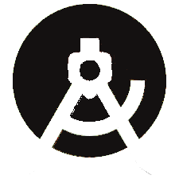

Tools We Use
GitHub
The team has established a git repository for each year, and for the 2019-2020 season two individual repositories for each robot. Github helps keep us organized as well as keep track of a "final" version of the code that we can view for competitions. View the team's Github organization here

Android Studio
The team uses Android Studio to develop code in Java. FTC provides teams with a standard SDK of the code used to interact with the robot's hardware, this only contains examples for how to program and teams must develop and expand from there.
FTC Dashboard
FTC Dashboard is a gradle plugin built by another FTC team that allows us to see telemetry data from the robot on a computer. We can then graph this information or save it for later. This helps greatly with PID tuning and analysis of any issues the robot is having, both physical or within the software.